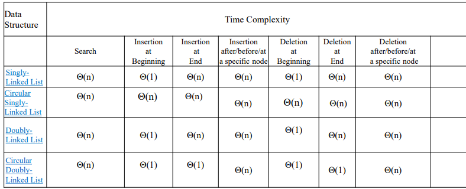

LINKED LISTS
Linked list
Linked list - A linked list is a collection of data elements called nodes in which the linear
representation is given by links from one node to the next node.
• Each node contains:
• Data will store the information part
• Next will store the address of the next node.
Node creation
-->Create the new Data Structure
struct Node
{ int data;
struct Node *next;}
-->At first node will be created
-->struct Node *n2;
-->Dynamic Memory Allocation
-->Then update the of the new node;
-->Insert the data in the new node
Types of Linked List
THERE ARE 4 TYPES:
1. Singly Linked List - A singly linked list is the simplest type of linked list in which every node contains some data and pointer to the next node of the same data type.
2. Circular Singly Linked List - A Singly linked list where the last node contains a pointer to the first node of the list.
3. Doubly Linked List - Two-way linked list which contains a pointer to the next as well as the previous node in the sequence.
• prev pointer-points to the address of previous Node
• next-pointer points to the address of the next node
4. Circular Doubly Linked List -A doubly linked list where the first node (prev pointer) is connected to the last node and the last
node (next pointer) will connect to the first node.
Operations of Linked List
• Create
• Insert:
• Insert at the beginning
• Insert at the end
• Insert before a given node
• Insert after a given node
• Delete:
• Delete a node from beginning
• Delete a node from the end
• Delete a given node
• Delete after a given node
• Display/Traversing
• Sort
Singly Linked List
• A singly linked list is list of elements, where each element consists of data and next pointer as values.
• These Elements are connected through a link(address)
singly linked list abstract data type(SLL ADT)
// Define the structure of node
typedef struct Node SLL;
struct Node
{ ElementType Element;
struct Node *next;
};
// Define the set of operations
void Insert_End(SLL *h, ElementType);
void Insert_Before_X(SLL *h, ElementType, ElementType);
void Insert_After_X(SLL *h, ElementType, ElementType);
ElementType Delete_X(SLL *, ElementType);
ElementType Delete_Begin(SLL *);
ElementType Delete_End(SLL *);
void Traverse(SLL *);
void Search(SLL *, Element Type);
SLL Insert End() node creation and algo
NODE CREATION:
Initially the node structure will be defined and header node will be created.
typedef struct Node SLL;
struct Node
{int data;
SLL *next;
}*head = NULL;
ALGORITHM:
Insert_End(SLL *head, int x)
Input: New data element x, The list h;
Output: A new node with data x is added to the end of the list h;
• Step 1 - Create a new_node with given value x and make new_node → next as NULL.
• Step 2 - Check whether list is Empty (head == NULL).
• Step 3 - If list is Empty then, set head = new_node.
• Step 4 - If list is Not Empty then
• Step 4.1 - Declare a node pointer temp and initialize with head.
• Step 4.2 - Keep moving the temp to its next node until it reaches to the last node in the list (until temp → next is equal to NULL).
• Step 4.3 - Set temp → next = new_node.
• Step 5 – STOP.
SLL Insert End() LOGIC
Insert_End(ele, head) // ele is the element to be added, head is the SLL header
//new node creation
• struct Node *new_node, *t;
• new_node = (struct Node *) malloc(sizeof(struct Node *));
• if (new_node == NULL) then, print (“NO memory”) exit(0);
//new node assignment
• new_node->data = x;
• new_node->next=NULL;
// if list is empty then make new_node as first node
• if( head==NULL)
• head=new_node;
// if list is not empty, then reach the last node and then add the address of new_node in last node next
• else
• t=head;
//move to the end of list
• while(t->next!=NULL)
• t=t->next;
//adding node at the end
• t->next=new_node;
TIME COMPLEXITY FOR SLL
TIME COMPLEXITY FOR SLL:
Ɵ(n) // n is the number of nodes in the list
Time Complexity = Ɵ (1) + Ɵ (1) + Ɵ (1) + Ɵ (n) = Ɵ (n)
SLL Insert Beginning()
•Step 1
•Create a new_node with a given value and
new_node → next as NULL.
•Step 2
• Check whether list is Empty (head == NULL).
•Step 3
• If it is Empty then, set head = new_node.
•Step 4
• If it is Not Empty then,
• Set new_node → next = head.
• Set head=new_node;
SLL Insert Begin (Logic)
Insert_Begin(ele, head) // ele is the element to add and head is the LL header
• //new node creation
• Struct Node *new_node, *t;
• new_node=(struct Node *) malloc(sizeof(struct Node *));
• if (new_node == NULL) then, print (“NO memory”) exit(0);
• //new node assignment
• new_node-->data=ele;
• new_node-->next=NULL;
• // check if list is empty then make new_node as first node
• if( head==NULL)
• head=new_node;
• else // if list is not empty, then update the new_node next and update head
• new_node-->next=head;
• head=new_node
SLL Insert after a given node (After ele)
•Step 1
•Create a new_node with given value
and new_node → next as NULL.
•Step 2
•Check whether list is Empty (head == NULL).
•Step 3
• If list is Empty then, print “Insertion is not
possible”, return;
•Step 4
• If list is Not Empty then, (move to the desired
node) define a node pointer temp and initialize
with head.
•Step 5
•Keep moving the temp to its next node until it
reaches to the desired node in the list (until temp → data is not equal to ele and temp != NULL).
•Step 6
•If(temp != NULL)
•Set new_node → next = temp →next;
•Set temp →next=new_node;
• Step 7
•else if(temp == NULL)
•If it doesn’t math with any node, then display error message “element not found”.
SLL Insert after a specific data element (Logic)
• Insert(ele, aele, head)
• // ele-to insert, aele-after element, head is the LL header
• //create a new node
• Struct Node *new_node, *t;
• new_node=(struct Node *) malloc(sizeof(struct Node *));
• if (new_node == NULL) then, print (“NO memory”) exit(0);
• // Assign data to new_node and update the address pointer
• new_node-->data=ele;
• new_node-->next=NULL;
• // if list is empty, assign new_node address in head
• if( head==NULL)
• print(“ Insertion not possible”);
• // if list is not empty, then mover the desired location
• else
• temp=head;
• while(temp-->data!=aele && temp!= NULL)
• temp=temp-->next;
• If(temp != NULL)
• //changing new_node next value
• new-->next=temp-->next;
• // changing temp->next to new_node
• temp-->next=new_node;
• else print(“Element Not Found)
Time Complexity = Ɵ (1) + Ɵ (1) + Ɵ (1) + Ɵ (n)
= Ɵ (n)
SLL Display/Traversing
It Is a process of visiting each node and displaying the data in it.
•Step 1
•Check whether list is Empty (head == NULL)
•Step 2
•If it is Empty then, display 'List is Empty!!!' and
terminate the function.
•Step 3
•If it is Not Empty then, define a Node pointer 'temp' and
initialize with head.
•Step 4
Keep displaying temp → data until temp reaches to the
last node.
Time Complexity = Ɵ (1) + Ɵ (1) + Ɵ (1) + Ɵ (n) = Ɵ (n)
SLL Displaying (Logic)
Display(head) // head is the LL header
• //create temp node
• Struct Node *temp = head;
• // check if list is empty then print empty message
• if( temp ==NULL)
• printf(“ List is Empty !!!!”);
• else // print the data in all the nodes
• while(temp != NULL)
• printf(“%d “, temp-->data);
• temp = temp-->next;
Time Complexity = Ɵ(1) + Ɵ(1) + Ɵ(n) = Ɵ(n)
SLL Search
It is a process of searching for an element in the list.
•Step 1
•Check whether list is Empty (head == NULL)
•Step 2
•If list is Empty then, display 'List is Empty!!!' and terminate the function.
•Step 3
•If list is Not Empty then, define a Node pointer 'temp' and initialize with head.
•Step 4
•Keep traversing to each node and compare the data element in each node with ele, if match display “Element Found” and terminate the function.
•Step 5
•If not terminated the function in step4, display “Element
not Found” and terminate the function.
TIME COMPLEXITY :Ɵ (1) + Ɵ (1) + Ɵ (1) + Ɵ (n) + Ɵ (1) = Ɵ (n)
SLL Delete (From the beginning)
To remove an element from a list of elements
•Step 1
• Check whether list is Empty (head == NULL)
•Step 2
•If list is Empty then, display 'List is Empty!!! Deletion is not possible' and terminate the function.
•Step 3
•If list is Not Empty then, define a Node pointer 'temp' and initialize with head.
•Step 4
• Check whether list is having only one node (temp → next == NULL)
•Step 5
•If there is only one node then head = NULL and
delete temp (Setting Empty list conditions)
•Step 6
• If there are more than one node then set head = temp → next, and delete temp.
SLL Delete a node from the end of the list
•Step 1
•Check whether list is Empty (head == NULL)
•Step 2
• If list is Empty then, display 'List is Empty!!! Deletion is not possible' and terminate the function.
•Step 3
•If list is Not Empty then, define two Node pointers 'temp' and ‘prev' and initialize 'temp' with head.
•Step 4
•Check whether list has only one Node (temp → next == NULL)
•Step 4.1
• If list is empty, then,
•set head = NULL
•delete temp.
•terminate the function.
•Step 4.2
•If list not empty, then,
•set ‘prev = temp ’
•move temp to its next node.
•Repeat these steps until it reaches to the last node in the list. (while temp → next != NULL)
•Step 5
•Finally, set prev → next = NULL and delete temp.
SLL Delete a specific node
•Step 1
•Check whether list is Empty (head == NULL)
•Step 2
• If list is Empty then, display 'List is Empty!!! Deletion is not possible' and terminate the function.
•Step 3
•If list is Not Empty then, define two Node pointers 'temp' and ‘prev' and initialize 'temp' with head.
•Step 4
• Step 4.1
•set ‘prev = temp ’
• Step 4.2
•if temp -> data is ‘ele’) goto step 5.
• Step 4.3
•else prev = temp and move temp to its next node.
• Step 4.4
•Repeat the steps 4.2 to 4.3 until there are nodes.(while temp != NULL)
•Step 5
• Step 5.1
•if (temp == head) then, head = temp->next; delete temp;
• Step 5.2
•else set prev → next = temp->next and delete temp
Circular Singly Linked List
• A circular singly linked list is list of elements, where each element consists of data and next pointer as values and last node points to first node.
• These Elements are connected through a link(address).
Circular Singly Linked List abstract data type(CSLL ADT)
// Define the structure of node
typedef struct Node CSLL;
struct Node
{ ElementType Element;
struct Node *next;
};
// Define the set of operations
void Insert_End(CSLL *h, ElementType);
void Insert_Before_X(CSLL *h, ElementType, ElementType);
void Insert_After_X(CSLL *h, ElementType, ElementType);
ElementType Delete_X(CSLL *, ElementType);
ElementType Delete_Begin(CSLL *);
ElementType Delete_End(CSLL *);
void Traverse(CSLL *);
void Search(CSLL *, Element Type);
CSLL – Insert_End() node creation and alorithm
NODE CREATION:
The setup
Initially the node structure will be defined and header node will be created.
typedef struct Node CSLL;
struct Node
{int data;
CSLL *next;
}*head = NULL;
ALGORITHM :
Insert_End(CSLL *h, int x)
Input: New data element x, The list h;
Output: A new node with data x is added to the end of the list h;
• Step 1 - Create a new_node with given value x and make new_node → next as NULL.
• Step 2 - Check whether list is Empty (head == NULL).
• Step 3 - If list is Empty then, set head = new_node and new_node->next = new_node.
• Step 4 - If list is Not Empty then
• Step 4.1 - Declare a node pointer temp and initialize with head.
• Step 4.2 - Keep moving the temp to its next node until it reaches to the last node in the list(until temp → next is not equal to head).
• Step 4.3 - Set temp → next = new_node and new_node->next = head
• Step 5 – STOP.
CSLL Insert_End (Logic)
Insert_End(ele, head) // ele is the element to be added, head is the SLL header
//new node creation
• struct Node *new_node, *t;
• new_node = (struct Node *) malloc(sizeof(struct Node));
• if (new_node == NULL) then, print (“NO memory”) exit(0);
//new node assignment
• new_node-->data = x;
• new_node-->next=NULL;
// if list is empty then make new_node as first node
• if( head==NULL)
• head=new_node and new_node-->next = new_node;
// if list is not empty, then reach the last node and then add the address of new_node in last node next
• else
• t=head;
//move to the end of list
• while(t-->next!=head)
• t=t-->next;
//adding node at the end
• t-->next=new_node and new_node-->next
TIME COMPLEXITY :Ɵ (1) + Ɵ (1) + Ɵ (1) + Ɵ (n) = Ɵ (n)
CSLL Insert at the beginning
•Step 1
•Create a new_node with a given value and new_node →next as NULL.
•Step 2
• Check whether list is Empty (head == NULL).
•Step 3
• If list is Empty then, set head = new_node and new_node-->next = new_node;
•Step 4
• If list is Not Empty then,
•Declare a node pointers temp, temp1 and initialize with head
• Set new_node → next = head.
• Set head=new_nod
• Keep moving the temp to its next node until it reaches to the last node in the list (until temp → next is not equal to temp1).
• Set temp → next = head.
TIME COMPLEXITY : Ɵ (1) + Ɵ (1) + Ɵ (1) + Ɵ (n) = Ɵ (n)
CSLL Insert after a given node (After ele)
•Step 1
•Create a new_node with given value and new_node → next as NULL.
•Step 2
•Check whether list is Empty (head == NULL).
•Step 3
• If list is Empty then, print “Insertion is not possible”, return;
•Step 4
• If list is Not Empty then, (move to the desirednode) define a node pointer temp and initialize with head.
•Step 5
•Keep moving the temp to its next node until it reaches to the desired node in the list (until temp → data is not equal to ele and temp != head).
•Step 6
•If(temp != head)
•Set new_node → next = temp →next;
•Set temp →next=new_node;
•else if(temp == head)
•Display error message “element not found”.
CSLL Delete a node from the beginning
(PTR = POINTER)
Step 1: IF HEAD = NULL
Write UNDERFLOW
Go to Step 8
[END OF IF]
Step 2: SET PTR = HEAD
Step 3: Repeat Step 4 while PTR → NEXT != HEAD
Step 4: SET PTR = PTR → next
[END OF LOOP]
Step 5: SET PTR → NEXT = HEAD → NEXT
Step 6: FREE HEAD
Step 7: SET HEAD = PTR → NEXT
Step 8: EXIT
CSLL Delete a node from the end of the list
(PTR=POINTER)
Step 1: IF HEAD = NULL
Write UNDERFLOW
Go to Step 8
[END OF IF]
Step 2: SET PTR = HEAD
Step 3: Repeat Steps 4 and 5 while PTR -> NEXT != HEAD
Step 4: SET PREPTR = PTR
Step 5: SET PTR = PTR -> NEXT
[END OF LOOP]
Step 6: SET PREPTR -> NEXT = HEAD
Step 7: FREE PTR
Step 8: EXIT
CSLL Delete a specific node
DONT KNOW
CSLL Delete a node after a specific element
DONT KNOW
CSLL Display/Traversing
It Is a process of visiting each node and displaying the data in it.
•Step 1
•Check whether list is Empty (head == NULL)
•Step 2
•If list is Empty then, display 'List is Empty!!!' and terminate the function.
•Step 3
•If list is Not Empty then, define a Node pointer 'temp' and initialize with head.
•Step 4
•Keep displaying temp → data until temp reaches to the last node.
TIME COMPLEXITY: Ɵ (1) + Ɵ (1) + Ɵ (1) + Ɵ (n) = Ɵ (n)
Doubly Linked List
DOUBLY LINKED LIST:
• A doubly linked list or a two-way linked list is a more complex type of linked list which contains a pointer to the next as well as the previous node in the sequence.
• It is a sequence of elements/nodes and each element consists of three components,
• Data: data / value of an element
• Next: pointer points to the next node in a list
• Prev: pointer points to the previous node in a list
IMPORTANT THINGS IN DLL:
• In double linked list,
• The first node must be always pointed by head.
• Always the previous field of the first node must be NULL.
• Always the next field of the last node must be NULL.
DLL – Insert_End NODE CREATION AND ALGORITHM
NODE CREATION:
The setup
Initially the node structure will be defined and header node will be created.
typedef struct Node DLL;
struct Node
{
int data;
DLL *prev;
DLL *next;
}*head = NULL;
ALGORITHM:
• Step 1
• Create a new_node with given value and new_node → prev and
new_nodenext as NULL.
• Step 2
• Check whether list is Empty (head == NULL)
• Step 3
• If list is Empty then, assign new_node to head and return.
• Step 4
• If list is not Empty, then, define a node pointer temp and initialize with head.
• Step 5
• Keep moving the temp to its next node until it reaches to the last
node in the list (until temp → next is not equal to NULL).
• Step 6
• set temp → next =new_node and new_node → prev=temp.
TIME COMPLEXITY: Ɵ (1) + Ɵ (1) + Ɵ (1) + Ɵ (1) + Ɵ (n) = Ɵ (n)
DLL - Insert at beginning
ALGORITHM:
• Step 1 • Create a new_node with given value and new_node → prev as NULL and new_nodenext as NULL.
• Step 2 • Check whether list is Empty (head == NULL)
• Step 3 • If list is Empty then, assign new_node to head, and return.
• Step 4 • If list is not Empty then, assign head to new_node → next, new_node to head-->prev, and new_node to head
TIME COMPLEXITY: Ɵ (1) + Ɵ (1) + Ɵ (1) + Ɵ (1) = Ɵ (1)
DLL - Insert after a specific location
• Step 1
• Create a new_node with given value and initialize its
pointers with NULL.
• Step 2
• Check whether list is Empty (head == NULL)
• Step 3
• If list is Empty then display insertion is not possible, and return.
• Step 4
• If list is not Empty then, define a pointer temp and initialize temp with head.
• Step 5
• Keep moving the temp until it reaches to the node after which we want to insert the new_node or the list exhausted ( while((temp→data!= desired) && temp!=NULL) ).
• Step 6
• If temp is NULL then Display 'Given node is not found in the list!!! Insertion not possible!!!' and terminate the function.
• Step 7
• new_node→prev=temp,
new_node → next=temp-->next;
temp-->next=new_node;
// check if there are nodes or not after temp
if(new_node-->next != NULL)
new_node->next->prev=new_node;
TIME COMPLEXITY:Ɵ (n)
DLL - Insert before a specific location
• Step 1
• Create a new_node with given value and initialize its pointers with NULL.
• Step 2
• Check whether list is Empty (head == NULL)
• Step 3
• If list is Empty then Display insertion is not possible, return;
• Step 4
• If list is not Empty then, define a pointer temp and initialize temp with head.
• Step 5
• Keep moving the temp until it reaches to the node before which we want to insert the new_node (while ((temp → data!= desired) && temp!=NULL) ).
• Step 6
• If list is exhausted then display 'Given node is not found in the list!!! Insertion is not possible!!!' and terminate the function.
• Step 7
• new_node→prev=temp-->prev,
new_node-->next = temp;
temp-->prev=new_node;
// if temp is not the first node in the list
if(new_node-->prev != NULL)
new_node-->prev-->next =new_node;
else // new_node is new first node
head = new_node;
Time Complexity = Ɵ(n)
DLL Delete a node from the beginning of the list
Step 1 - Check whether list is Empty (head == NULL)
Step 2 - If it is Empty then, display 'List is Empty!!! Deletion is not possible' and terminate the function.
Step 3 - If list is not Empty then, define a Node pointer 'temp' and initialize with head.
Step 4 - Check whether list is having only one node (temp → next == NULL)
Step 4.1 - If list is having only one node, then set head to NULL and
delete temp (Setting Empty list conditions)
Step 4.2 - If list is with more than one node, then assign temp →
next to head, NULL to head → prev and delete temp.
Time Complexity = Ɵ (1)
DLL Delete a node from the end of the list
STEP 1 Check whether list is Empty (head == NULL)
STEP 2 - If list is Empty, then display 'List is Empty!!! Deletion is not possible' and terminate the function.
STEP 3 - If list is not Empty then, define a Node pointer 'temp' and initialize with head.
STEP 4 - Check whether list has only one Node (temp → next ==NULL)
STEP 5 - If list has only one node, then assign NULL to head and delete temp. Terminate the function. (Setting Empty list condition)
STEP 6 - If list has more than one node, then keep moving temp until it reaches to the last node in the list. (until temp → next is equal to NULL)
STEP 7 - Assign NULL to temp → previous → next and delete temp.
Time Complexity = Ɵ (1) + Ɵ (1) + Ɵ (1) + Ɵ (1) + Ɵ (1) + Ɵ (n) + Ɵ(1)= Ɵ (n)
DLL Delete a node after a specific node in the list
STEP 1 - Check whether list is Empty (head == NULL)
STEP 2 - If it is Empty then, display 'List is Empty!!! Deletion is
not possible' and terminate the function.
STEP 3 - If it is not Empty, then define a Node pointer 'temp' and
initialize with head and define another pointer ptr.
STEP 4 - Keep moving the temp until it reaches to the location
after a node to be deleted or to the last node.(while (temp-->data != desired && temp-->next!= NULL)).
STEP 5 – If temp points to last node(temp-->next== NULL), then display 'Deletion is not possible!' and terminate the function.
STEP 6 –
Set ptr to temp-->next;
Set temp-->next=ptr-->next;
ptr-->next-->prev=temp;
free(ptr);
Time Complexity = Ɵ (n)
DLL Delete a specific node in the list
STEP 1 - Check whether list is Empty (head == NULL)
STEP 2 - If it is Empty then, display 'List is Empty!!! Deletion is not possible' and terminate the function.
STEP 3 - If it is not Empty, then define a Node pointer 'temp' and initialize with head.
STEP 4 - Keep moving the temp until it reaches to the exact node to be deleted or there are no nodes left (while tempdata != desired && temp != NULL).
STEP 5 - If the list exhausted, then display 'Given node not found in the list! Deletion not possible!!!' and terminate.
STEP 6 - If it is reached to the exact node which we want to delete, then check whether list is having only one node or not (tempprev == head and tempnext == NULL).
STEP 7 - If list has only one node and that is the node which is to be deleted then set head to NULL and delete temp (free(temp)), terminate the function.
STEP 8 - If list contains multiple nodes, then check whether temp is the first node in the list (temp == head).
STEP 9 - If temp is the first node, then move the head to the next node (head = head → next), set head of previous to NULL (head → previous = NULL) and delete temp, terminate the function.
STEP 10 - If temp is not the first node, then check whether it is
the last node in the list (temp → next == NULL).
STEP 11 - If temp is the last node then set temp of previous of
next to NULL (temp → previous → next = NULL) and delete temp (free(temp)), terminate the function.
STEP 12 - If temp is not the first node and not the last node,
then set temp of previous of next to temp of next (temp → previous → next = temp → next), temp of next of previous to temp of previous (temp → next → previous = temp → previous) and delete temp (free(temp)
Time Complexity = Ɵ (n)
DLL Display
• STEP 1 - Check whether list is Empty (head == NULL)
• STEP 2 - If it is Empty, then display 'List is Empty!!!' and terminate the function.
• STEP 3 - If it is not Empty, then define a Node pointer 'temp' and initialize with head.
• STEP 4 - Keep displaying temp → data until temp reaches to the last node.
Circular Doubly Linked List
CIRCULAR DOUBLY LINKED LIST :
• Any linked list is called circular doubly linked list if it is a doubly linked list and the first node of the list must be connect to the last node and last node must be connected to the first node.
• It is a sequence of elements/nodes and each element consists of three components,
• Data: data / value of an element
• Next: pointer points to the next node in a list
• Prev: pointer points to the previous node in a list
CDLL – Insert_End() NODE CREATION AND ALGO
NODE CREATION:
The setup
Initially the node structure will be defined and header node will be created.
typedef struct Node DLL;
struct Node
{
int data;
DLL *prev;
DLL *next;
}*head = NULL;
ALGORITHM:
• STEP 1
• Create a new_node with given value and new_node → prev and new_nodenext as NULL.
• STEP 2
• Check whether list is Empty (head == NULL)
• STEP 3
• If list is Empty then, assign new_node to head, new_nodeprev, and to new_nodenext; terminate the function.
• STEP 4
• If list is not Empty, then, define a node pointer temp and initialize with head.
• STEP 5
• If the list is not empty, then
• Set head to new_node-->next, head-->prev to new_node-->prev,new_node to head-->prev, new_node to head-->prevnext.
TIME COMPLEXITY = Ɵ (1) + Ɵ (1) + Ɵ (1) + Ɵ (1)
= Ɵ (1)
CDLL - Insert at beginning
• STEP 1
• Create a new_node with given value and new_node → prev as NULL and new_nodenext as NULL.
• STEP 2
• Check whether list is Empty (head == NULL)
• STEP 3
• If list is Empty then, assign new_node to head,new_node-->prev, and to new_node-->next; terminate the function.
• STEP 4
• If list is not Empty then, assign head to new_node → next, head-->prev to new_node-->prev, new_node to head-->prev-->next, new_node to head-->prev-->next, and new_node to head
Time Complexity = Ɵ (1) + Ɵ (1) + Ɵ (1) + Ɵ (1) = Ɵ (1)
CDLL - Insert after a specific location
• STEP 1
• Create a new_node with given value and initialize its pointers with NULL.
• STEP 2
• Check whether list is Empty (head == NULL)
• STEP 3
• If list is Empty then display insertion is not possible, and return.
• STEP 4
• If list is not Empty then, define a pointer temp and initialize temp with head.
• STEP 5
• Keep moving the temp until it reaches to the node after which we want to insert the new_node or the list exhausted (while( (temp→data!= desired) && temp!=head) ).
• STEP 6
• If temp is equal to head then Display'Given node is not found in the list!!! Insertion not possible!!!' and terminate the function.
• STEP 7
• new_node→prev=temp,
new_node → next=temp-->next;
temp-->next=new_node;
new_node->next->prev=new_node;
Time Complexity = Ɵ (n)
CDLL - Insert before a specific location
• STEP 1
• Create a new_node with given value and initialize its pointers with NULL.
• STEP 2
• Check whether list is Empty (head == NULL)
• STEP 3
• If list is Empty then Display insertion is not possible, return;
• STEP 4
• If list is not Empty then, define a pointer temp and initialize temp with head.
• STEP 5
• Keep moving the temp until it reaches to the node before which we want to insert the new_node (while ((temp → data!= desired) &&temp!=head) ).
• STEP 6
• If list is exhausted then display 'Given node is not found in the list!!! Insertion is not possible!!!' and terminate the function.
• STEP 7
• new_node→prev=temp-->prev,
new_node-->next = temp;
new_node-->prevnext = new_node;
temp-->prev =new_node;
// if temp is the previous first node then update head
if(temp == head )
head = new_node;
Time Complexity = Ɵ(n)
CDLL Delete a node from the beginning of the list
STEP 1 - Check whether list is Empty (head == NULL)
STEP 2 - If it is Empty then, display 'List is Empty!!! Deletion is not possible' and terminate the function.
STEP 3 - If list is not Empty then, define a Node pointer 'temp' and
initialize with head.
STEP 4 - Check whether list is having only one node (temp → next== temp && temp-->prev = temp)
Step 4.1 - If list is having only one node, then set head to NULL and
delete temp (Setting Empty list conditions)
Step 4.2 - If list is with more than one node, then assign temp →
next to head, temp-->next to temp-->prev-->next, temp-->prev to temp-->next-->prev, and delete temp.
TIME COMPLEXITY = Ɵ (1)
CDLL Delete a node from the end of the list
STEP 1 - Check whether list is Empty (head == NULL)
STEP 2 - If list is Empty, then display 'List is Empty!!! Deletion
is not possible' and terminate the function.
STEP 3 - If list is not Empty then, define a Node pointer 'temp'
and initialize with head-->prev.
STEP 4 - Check whether list has only one Node (temp → next ==head)
STEP 5 - If list has only one node, then assign NULL to head and delete temp. Terminate the function. (Setting Empty list condition)
STEP 6 - If list has more than one node, Assign head to temp → previous → next, temp-->prev to head-->prev and delete temp.
Time Complexity = Ɵ (1)
CDLL Delete a node after a specific node in the list
STEP 1 - Check whether list is Empty (head == NULL)
STEP 2 - If list is Empty then, display 'List is Empty!!! Deletion is
not possible' and terminate the function.
STEP 3 - If list is not Empty, then define a Node pointer 'temp' and
initialize with head also define a Node pointer ptr.
STEP 4 - Keep moving the temp until it reaches to the location
after a node to be deleted or to the last node.(while (temp-->data != desired && temp-->next != head)).
STEP 5 – If temp points to last node(temp-->next== head), then display 'Deletion is not possible!' and terminate thefunction.
STEP 6 –
Set ptr to temp-->next;
Set temp-->next=ptr-->next;
ptr-->next-->prev=temp;
free(ptr);
Time Complexity = Ɵ (n)
CDLL Display
• STEP 1 - Check whether list is Empty (head == NULL)
• STEP 2 - If it is Empty, then display 'List is Empty!!!' and terminate the function.
• STEP 3 - If it is not Empty, then define a Node pointer 'temp' and initialize with head.
• STEP 4 - Keep displaying temp → data until temp reaches to the last node.
Complexity Analysis

BACK TO TOP